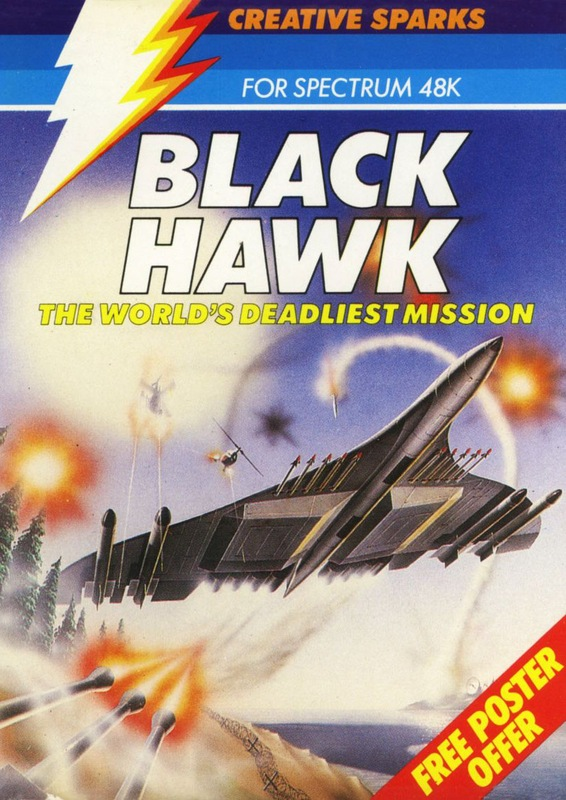
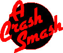
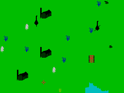

Black Hawk


{kind=link}

| Publisher: | Creative Sparks |
| Price: | £6.95 |
| Year: | 1984 |
| Source: | CRASH, Issue 8 |

Black Hawk is an arcade shoot em up of positively violent proportion. It is also a fairly complex game to get into at first and requires some concentration on the detailed inlay instructions. It is also the first translation to the Spectrum of the popular arcade game ‘Xevious’. We would have to say at the outset however, that the Spectrum’s display isn’t up to the quality of a dedicated arcade machine, so no one must expect those extraordinary graphics. On the other hand, Creative Sparks have added some other interesting features and this is a game which uses ‘Xevious’ as a departure point rather than trying to be a copy.
The time is the near future and the place is a group of heavily defended islands. You are flying your Black Hawk. Your mission is to seek out and destroy enemy airfields and missile launching sites. There are, however, many other installations to destroy. Up against you are enemy anti-aircraft guns, helicopter gunships, SAM missiles and missile launchers. The success of your mission is gauged by your SLF figure (Strategic Loss Factor) — in other words you get points for targets destroyed, i.e. tanks, rockets, SAMs, aircraft ships, gunships, jets, helicopters and others. ‘Others’ are ground installations like factories.

and three factories
Your aircraft has a computer attack system which features a two-screen display — the defence screen and the attack screen. In the attack screen a small yellow U at the bottom indicates your vertical position and a white cross-sight may be moved over targets. When it turns red, a missile is automatically fired to detonate the target. It can be used to destroy flying targets as well as ground targets, but any flying target which reaches the base of the screen will cause your computer to flip automatically to the defence screen. This shows the Black Hawk at the base of the screen and the approaching objects will soon appear at the top, flying rapidly down towards you. In this screen you may use your cannon to destroy the enemy. Successfully destroying them will return you to the attack screen again.
Your object is to gain a high OTPF (Optimum Target Percentage Figure). At the end of a mission this figure is calculated and, if high enough, additional weaponry may be added to your craft for further missions. Weaponry may also be removed if you fall below the appropriate figure. The weapons are ECM Pod which detects radar, radios and listening posts; X Cannon which increases fire power in the defence system; Blitvig which destroys all visible enemy units and is limited in use by your OTPF; and finally, the Wild Weasel which makes you invulnerable for a short time and may only be used once per mission.
This gives a brief (!) run down of what to expect from Black Hawk — there is more to it. Two skill levels, Rookie and Honcho, plus increasing difficulty.
CRITICISM
‘I haven’t had as much fun since the last May fair brought the arcade machines to town for three days. I also have a very sore first finger from firing! The general trend recently has been away from shoot em ups to more complex adventurish games, but there’s always room for a really good shoot em up and this is one of those. An awful lot is going on even at the start and on the lower level of skill, and by later missions the shrapnel is flying like snow in a blizzard. The graphics are all fairly small, although nicely detailed but they move very fast and smoothly and the down scrolling landscape is very smooth as well. Perhaps the only difficulty which is a bit aggravating is that the cross-sight when white is a bit hard to see on the blue of the sea. Black Hawk is a shoot em up that requires a great deal of concentration as well as very good hand and eye co-ordination. Extremely addictive!’
‘Just what the doctor ordered! A fast, aggressive, brilliant shoot em up! First loading the game and reading through several screens of information, I decided to take on the task of destroying everything in sight and so I found myself confused by the way the screen kept on flicking over from one image to another. This is quickly overcome with several playings of the game, although to be fair it is indicated in the instructions on the inlay. It took me about half an hour to get used to the aggressive style this game plays by which time I was totally absorbed by the sheer single-mindedness of the enemy I was up against. The more I played this game, the more I wanted to play it, while the computer was throwing more and more defensive weapons at me in an attempt to eliminate me. The graphics come in various sizes from small to large but all reasonably in scale with each other. The various enemy objects are realistically animated, recoiling guns, rotating helicopter blades, rotating radar dishes etc. Colour and sound have both been used very well. This has got to be the best shoot em up game I’ve seen for an age, one that has loads of playability and addictive qualities and I still haven’t seen what is yet to come.’
‘I thought this was going to be a flight simulation game, little did I know that I was to be dumped in the midst of a raging battle. First impressions are rather daunting with all the instructions written in future jargon, but never fear, once into the game you can forget most of them. Also, at the outset the graphics seem a little disappointing, quite simple really, but somehow after half an hour’s play they all seem fine, indeed very good, and suddenly there are so many things all over the place, whizzing, whirling and firing. Shoot em ups haven’t exactly vanished from the scene thank goodness, but Black Hawk may well start a full-scale revival!’
COMMENTS
| Control keys: | Cursors, or Q/A up/down, O/P left/right with 0 to fire |
| Joystick: | Kempston, ZX 2, Fuller, AGF, Protek |
| Keyboard play: | Very responsive |
| Use of colour: | Very good generally, one small problem with the cross-sight |
| Graphics: | Very good, smooth and detailed, very fast |
| Sound: | Good noises and tune |
| Skill levels: | 2 but increasing difficulty by mission |
| Screens: | 2 |
| Originality: | Loosely based on arcade original ‘Xevious’, but as a Spectrum shoot em up, entirely original |
| General rating: | An excellent addictive, fast arcade game. |
| Use of computer: | 91% |
| Graphics: | 89% |
| Playability: | 95% |
| Getting started: | 92% |
| Addictive qualities: | 95% |
| Value for money: | 87% |
| Overall: | 92% |